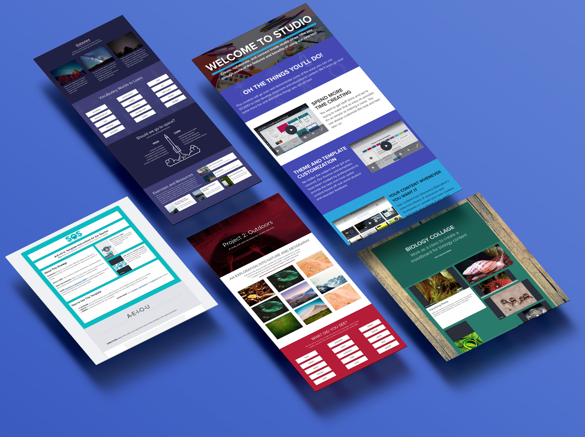
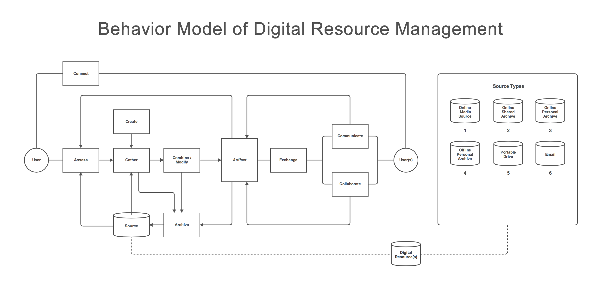
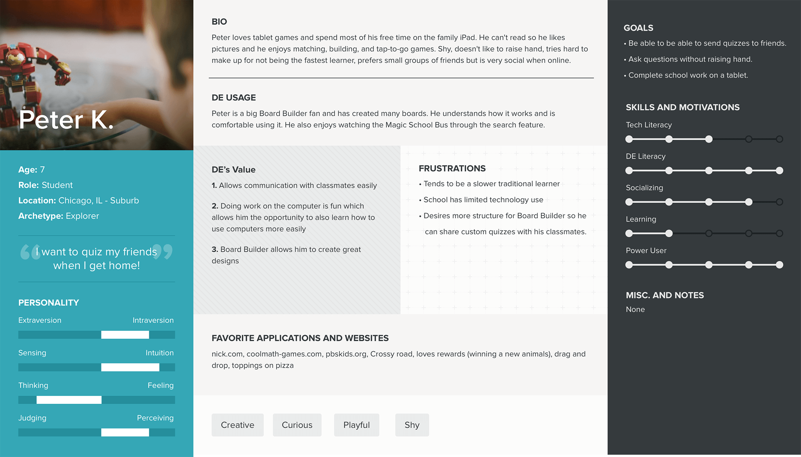
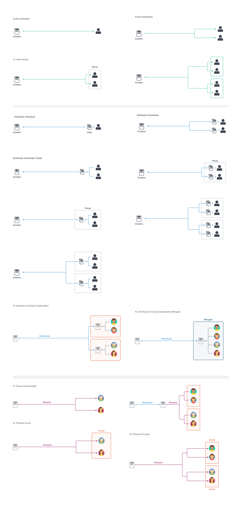
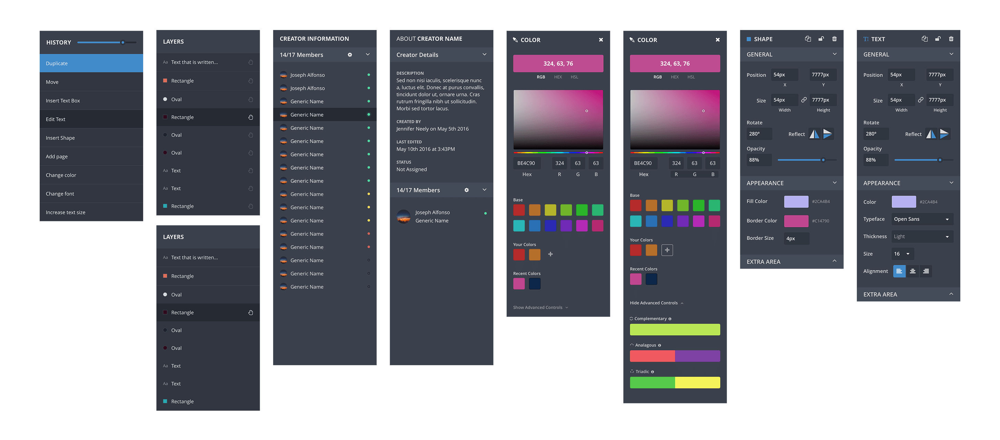
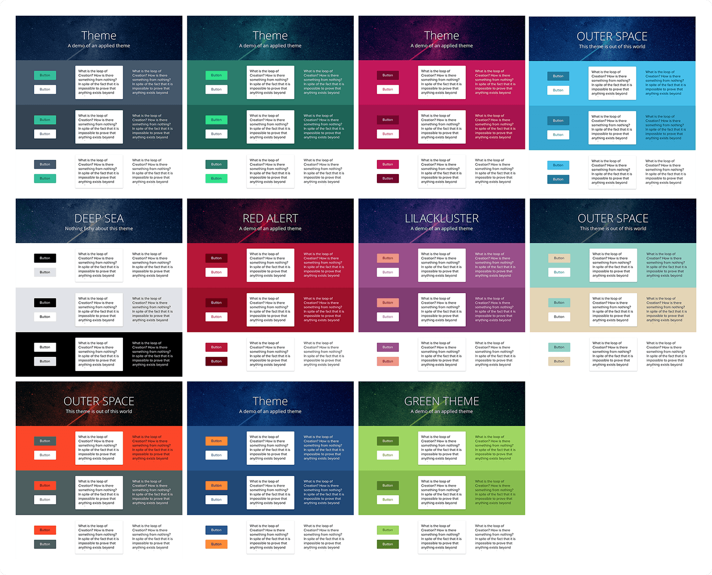
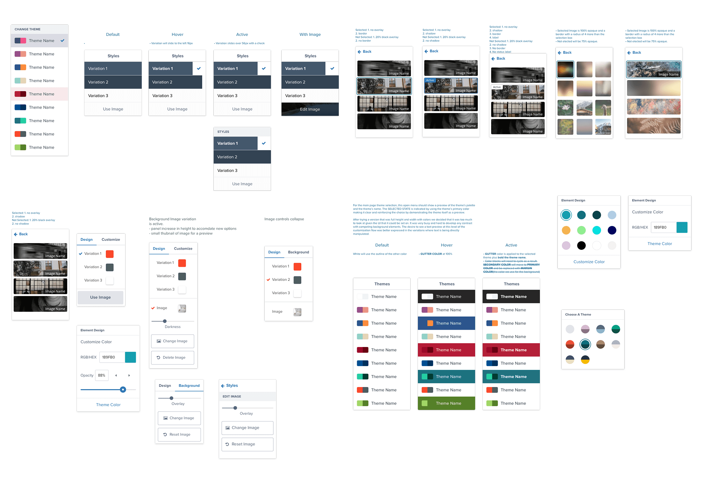
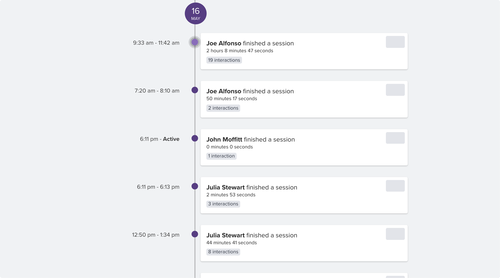
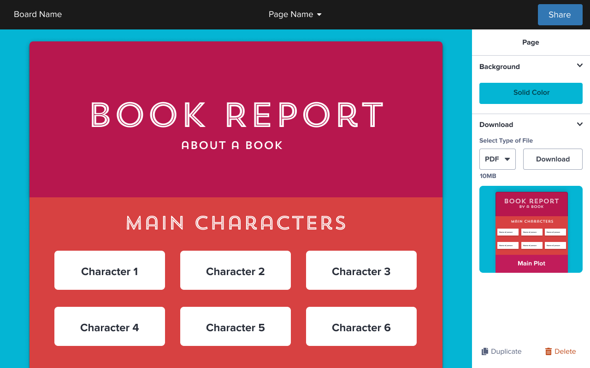
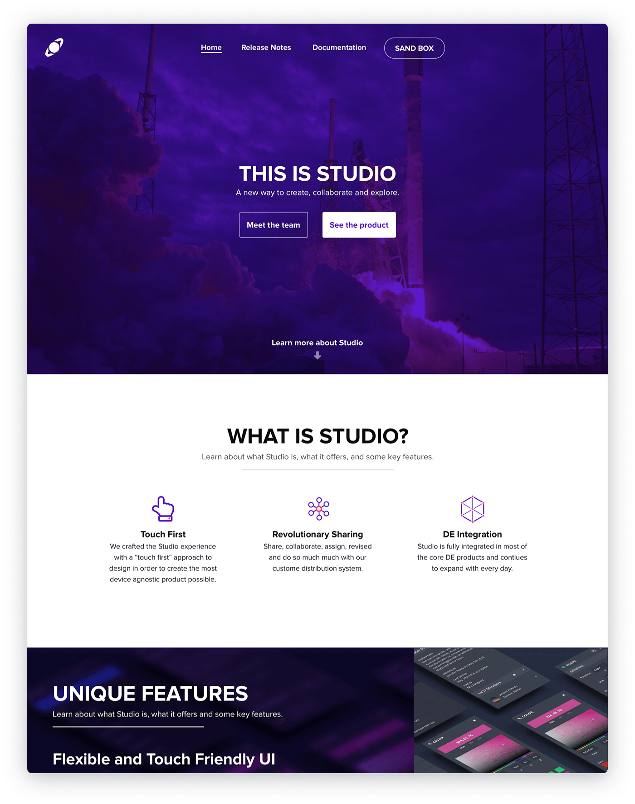

Discovery Education · Studio
Building the first real-time collaboration platform for K–12 classrooms
Discovery Education's legacy creation tool was built on outdated technology with poor sharing, no real collaboration, and a user experience that had fallen far behind the classroom's needs. I led the complete redesign and replacement: Discovery Education Studio, a real-time co-creation platform that gave millions of students and teachers a shared digital space to think, build, and learn together.

4+
Years of research and development
Millions
Students and teachers reached at launch
100%
Real-time, simultaneous collaboration
All devices
Cross-device parity from day one
The problem
Discovery Education's Board Builder was the incumbent creation tool: aging technology, clunky sharing flows, and no real-time collaboration. Teachers worked around it constantly. Students passed files back and forth like it was 2005. The product had become an obstacle rather than an enabler.
The ask was to replace it entirely with something that reflected how modern classrooms actually work: connected, collaborative, device-agnostic, and fast. I was responsible for the complete user experience from initial research through launch and beyond.
My role
As Lead Designer and UX Architect, I owned the full experience: research, information architecture, interaction design, motion, design system integration, and cross-functional alignment. I worked alongside engineers, product managers, educators, and the marketing team across every phase of the project.
A significant part of this work was organizational. Studio was ambitious. Getting the company aligned on a shared vision, a clear set of principles, and a realistic roadmap was just as important as the design itself.
A new model for classrooms
One of the core insights from early research was that teachers and students weren't just looking for a better creation tool. They were managing a fragmented mess of content: downloading, re-uploading, emailing, screenshotting, and improvising workflows that shouldn't need to exist.
Studio wasn't just a product redesign. It was a new model for how digital resources lived in a classroom. Instead of files that moved between people, Studio introduced shared Boards: persistent, living spaces where teachers and students could bring content, create together, and build on each other's work in real time.

Research, planning, and alignment
We built on prior research to map user frustrations, desires, and existing behaviors. From there the challenge was alignment: Studio could do a lot, which meant the risk of trying to do everything was real. I used personas, journey maps, and working sessions to anchor the team on the users who mattered most and the outcomes they actually needed.


Early exploration
Early prototypes were too complex. The first iterations gave users too much control at once, which worked fine for power users but overwhelmed everyone else. The lesson was clear: open-ended creation tools need guardrails, not just freedom.
We iterated fast. Prototypes went through multiple rounds of usability testing with actual teachers and students. Each round tightened the interaction model and clarified what mattered most to the people using it.

Key features
Accessible color themes
Not everyone thinks about accessibility when creating things, and in a classroom that has real consequences. I designed a suite of color themes that maintained accessible text contrast and accessible background options, so teachers could customize boards without inadvertently creating barriers for students with visual impairments.

Guided customization
Users consistently ask for more customization options when surveyed. What research actually shows is that too much customization increases cognitive load and reduces completion rates. We solved this with guided customization: a layered system that surfaced sensible defaults first and revealed depth only when users reached for it.

Tangible real-time collaboration
Most "collaboration" tools let people take turns editing a shared file. Studio did something more ambitious: users could see each other's cursors moving on screen in real time. It wasn't just live editing, it was the feeling of being in the same physical space. That distinction mattered enormously in a classroom context.
Because so much of the collaborative experience was motion-dependent, I used After Effects and Principle to prototype and communicate interaction behavior before engineering investment. Testing intent through motion early saved significant rework downstream.
"It's one thing to pass a document back and forth. It's another to update it live. And it's another thing entirely when you can see what someone else is doing as if they were in the same room."
Board history and participation tracking
Every Studio board maintained a full history. Teachers could see how a board evolved over time, replay the creation process, and review individual student participation. For teachers, this was a new window into how students think and work, not just what they submitted.

Launch
After more than two years of design and development, Studio launched with a progressive rollout coordinated around the school calendar. A soft launch preceded the full release, giving us a controlled window to catch issues before reaching the full user base.
Post-launch, the work shifted to delegating, prioritizing incoming feedback, and shipping features on a rolling timeline while stabilizing the product under real classroom conditions.

Supporting users and building product literacy
Discovery Education has a strong reputation with educators, and we needed Studio to earn that trust. Onboarding and literacy were as much a part of the design as the product itself.

Template marketplace
The Marketplace gave teachers a starting point instead of a blank canvas. Teachers could save and share their own board templates, and the community grew its own library of reusable starting points. It reduced the cold-start problem and accelerated adoption in classrooms where time was always scarce.
In-product help and contextual support
We embedded contextual help throughout Studio using third-party tooling, surfacing guidance based on what the user was trying to do rather than forcing them to leave the product. As we identified gaps in feature engagement, we layered in progressive in-product messaging to guide users toward features they hadn't discovered.
Performance and outcomes
Studio had to integrate across the entire Discovery Education platform, so success metrics were composite. We tracked traditional usability measures: time on task, success rates, error frequency. We also tracked behavioral signals from retired legacy tools to understand which features mattered most and how usage patterns shifted after migration.
Products retired as a result of Studio became measurement tools in their own right. Tracking what teachers stopped using told us as much about Studio's success as what they started doing.
What we could have done better
Staying on strategy longer
As Studio's internal visibility grew, pressure to respond to stakeholder requests increased. The shift from fully production-focused to partly politics-managed was gradual, but it created moments where we moved off of well-researched directions before we'd fully tested them. Looking back, holding the line on strategy for longer would have reduced some of the rework.
Revisiting discarded work sooner
More than once we returned to concepts we'd set aside a year or more earlier. In some cases, those earlier explorations turned out to be closer to the right answer than the path we'd taken in the interim. Keeping a more accessible archive of explored directions would have shortened some of those loops.
Additional contributions
- Defined Studio's design principles, product vision, and feature roadmap
- Owned the full visual direction including interaction patterns and states
- Integrated Studio into the broader Discovery Education design system
- Designed inclusive, accessible experiences for students across all device types
- Prototyped collaborative motion and interaction behaviors in After Effects and Principle
- Led usability testing with teachers and students across multiple research rounds
- Coordinated cross-functional alignment across design, engineering, product, and marketing
- Designed the Template Marketplace and supporting teacher community experiences